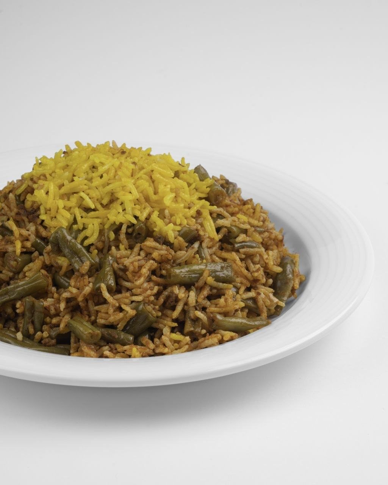
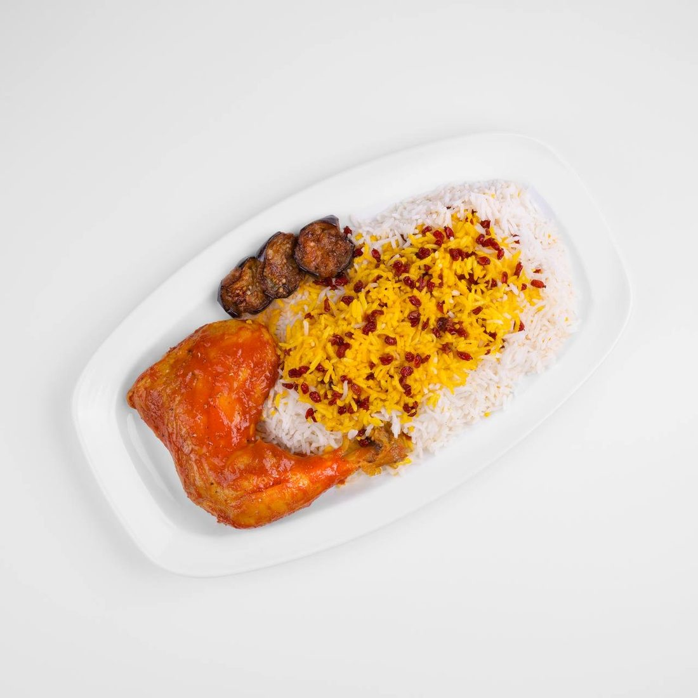
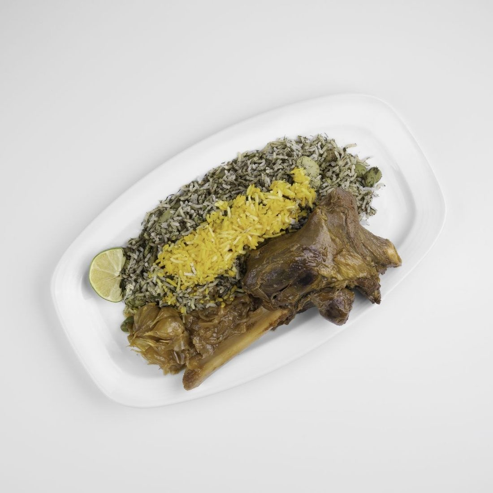
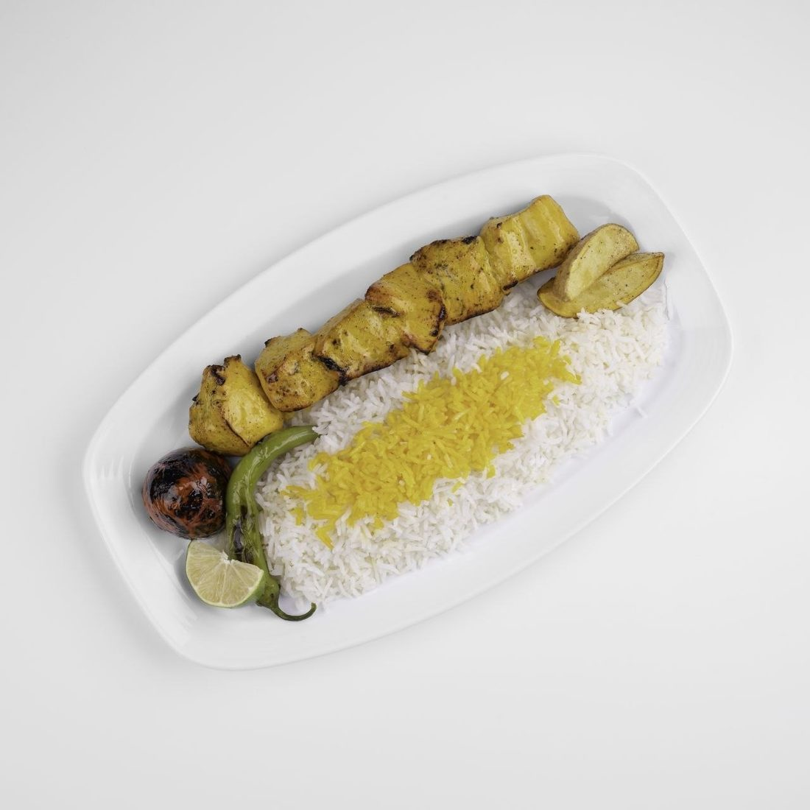
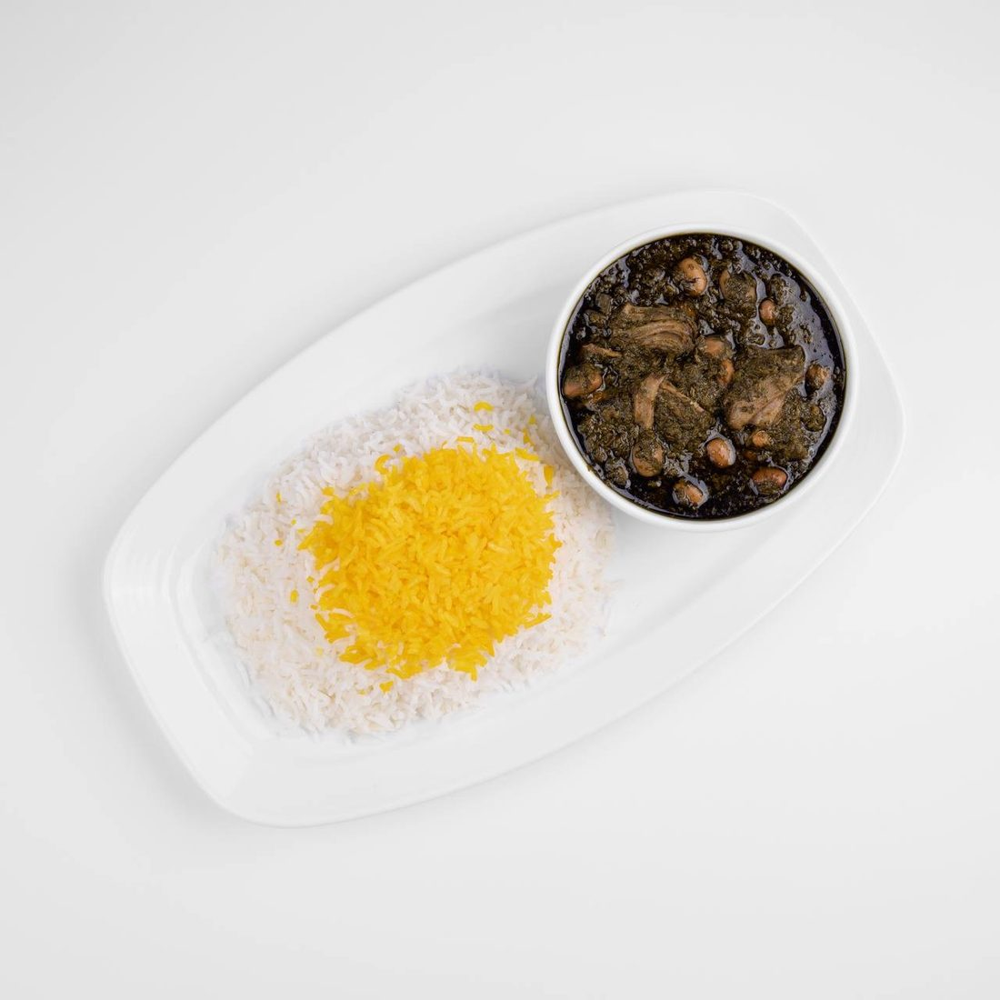
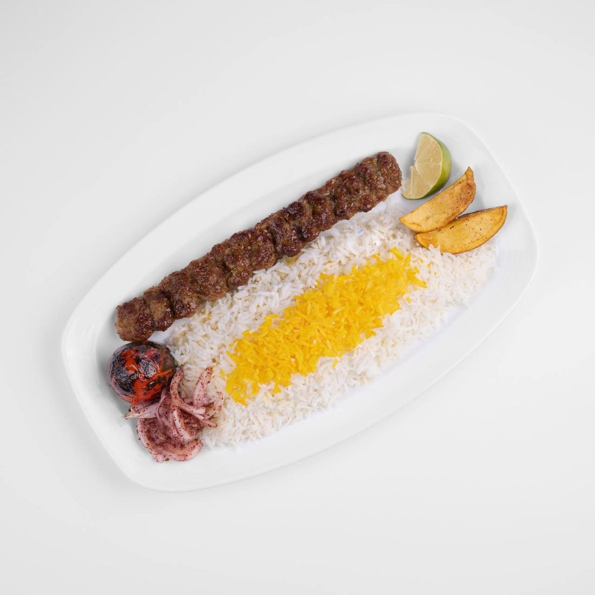
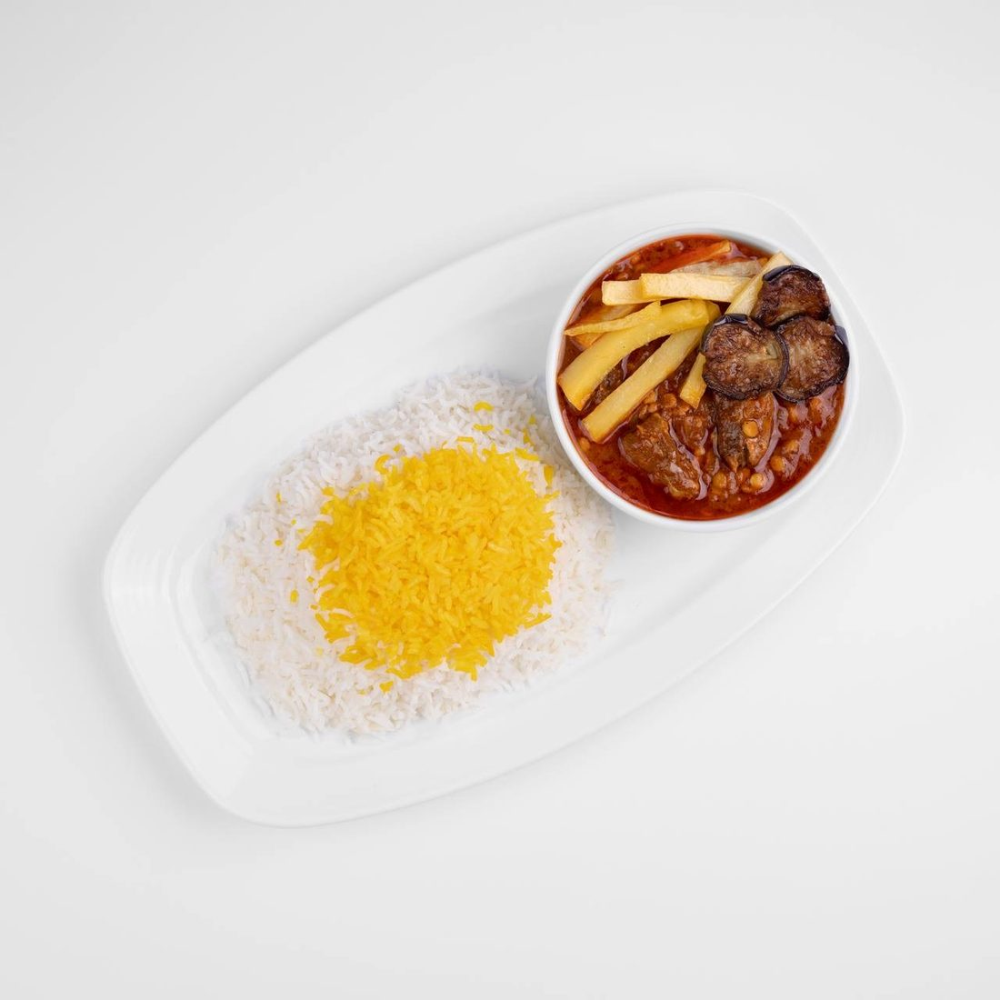

TEHERAN
Authentic Persian Cuisine in Koblenz
Experience authentic Persian flavors, traditional recipes, and warm Iranian hospitality in the heart of Koblenz.
Welcome to Teheran
A Taste of Iran in Koblenz
From saffron-scented rice to slow-cooked stews, every dish at TEHERAN is prepared the traditional way — with fresh ingredients, time-honored recipes, and a genuine love of Persian hospitality.
From Our Kitchen
A Few Favorites

Loobia Polo
Green bean & saffron rice

Zereshk Polo ba Morgh
Saffron rice with barberries & chicken

Baghali Polo ba Mahiche
Lamb shank with dill & fava bean rice

Joojeh Kabab
Saffron chicken skewer with rice

Ghormeh Sabzi
Herb & kidney bean stew

Kabab Koobideh
Persian minced meat skewer

Gheimeh
Persian split pea stew
“leckeres iranisches Essen. Kabab Koobideh, Kashk-e Bademjan, Fesenjan und Chelo Goosht haben uns sehr gut geschmeckt. Das Personal war freundlich und aufmerksam. Wir haben uns wohlgefühlt und empfehlen das Restaurant weiter.”Leave Us a Google Review